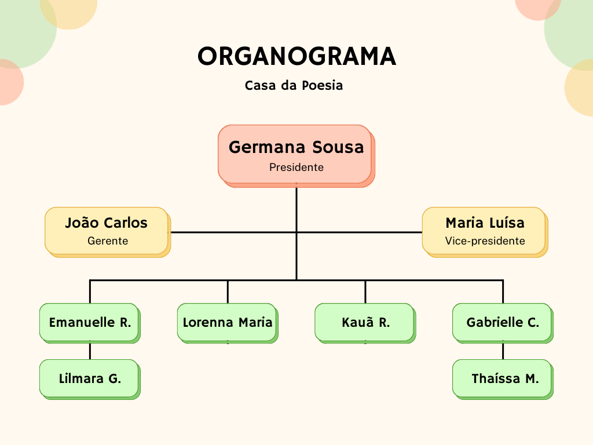

Sobre
A Casa da Poesia é uma editora e livraria especializada em literatura, dedicada a compartilhar histórias e ideias que inspiram e transformam vidas. Fundada por amantes da leitura, nossa missão é promover a paixão pela literatura e fomentar uma comunidade de leitores apaixonados. Oferecemos uma curadoria cuidadosa de títulos de poesia, ficção, não-ficção e infantis, além de eventos literários e oficinas de escrita criativa.
Razão Social:
Livraria e Editora Casa da Poesia LtdaNome Fantasia:
Casa da PoesiaSetor da Sociedade:
Setor TerciárioSetor da Economia:
Setor Terciário Missão
Nossa missão é promover o amor pela leitura e o conhecimento, oferecendo aos nossos clientes uma ampla seleção de livros, serviços de qualidade e uma experiência de compra única. Buscamos tornar o universo literário acessível a todos, proporcionando um ambiente acolhedor e estimulante para leitores de todas as idades e interesses, além de fomentar a cultura e a educação em nossa comunidade. Nossa missão é promover o amor pela leitura e o conhecimento, oferecendo aos nossos clientes uma ampla seleção de livros, serviços de qualidade e uma experiência de compra única. Buscamos tornar o universo literário acessível a todos, proporcionando um ambiente acolhedor e estimulante para leitores de todas as idades e interesses, além de fomentar a cultura e a educação em nossa comunidade.
Visão
Ser a livraria referência em qualidade, inovação e atendimento ao cliente, reconhecida por contribuir para a formação de leitores críticos e apaixonados, e por promover o acesso à literatura e ao conhecimento de forma inclusiva e sustentável. Nosso objetivo é expandir constantemente nossa oferta de produtos e serviços, integrando tecnologia e tradição para criar uma experiência de compra cada vez mais dinâmica e enriquecedora.Valores
Paixão pela Leitura Valorizamos a leitura como ferramenta essencial para o desenvolvimento pessoal, cultural e intelectual. Buscamos inspirar e incentivar o hábito da leitura, oferecendo livros que conectem nossos clientes a novas ideias e mundos.Compromisso com a Qualidade
Estamos comprometidos em oferecer produtos de alta qualidade, selecionados com rigor, e em garantir um atendimento impecável que exceda as expectativas de nossos clientes.Ata da Reunião da Empresa
Aos cinco dias de mês de junho do ano de dois mil e vinte e quatro, com inicio ás dez e vinte, na sala de reunião da livraria Casa da Poesia, situada na rua Miguel Ângelo, número quatrocentos e quarenta e quatro, Washigton, nos Estados Unidos, realizou-se uma reunião de todos os gestores da empresa, com o objetivo de tratar sobre gastos e rendimento. A reunião foi presidida pelo(a) presidente da livraria, Germana Sousa, tendo como secretário Kauã Ribeiro. Contou com a participação de três participantes, gerente, secretário, gerente de marketing, vice-presidente, tesoureira, atendente e gerente, João Carlos Filho. Inicialmente Germana Sousa solicitou ao gerente reunir-se os dados financeiros da empresa. Foi esclarecido que irá ocorrer um aumento no salário dos funcionários tendo em vista o aumento dos investimentos e bom resultado do rendimento dos mesmos. Nada mais havendo a ser tratado, foi lavrada a presente ATA, que vai assinada por mim Kauã Ribeiro, secretário da reunião, presidente da reunião, vice-presidente e pelos demais funcionários presentes.